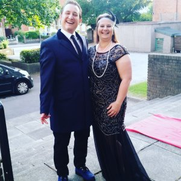
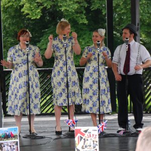

Testimonials
Here are some of the things that people have said about "Andy B Goode" gigs.
If you have any comments, please do contact me.
If you have any comments, please do contact me.
J. Franklin (Fete)"My expectations were vastly exceeded! Great quality voice and equipment made for a splendid performance.""'Andy B Goode' is a splendid performer who gives consistently good performance across a wide range of singing styles." "'La Bamba' is especially good to hear. Perfect for weddings, christenings, birthdays etc. Would highly recommend." |
 |
E. Cutler (Dosthill, Vintage Fayre)"Andy B Goode exceeded our expectations, so professional, an excellent act which was very good value for money.""Having Andy B Goode at our vintage fair really set the scene and made the vintage context." "It was lovely to see people of all ages stop, sit and listen, sing along or boogie on down." |
 |
C. Kirkwood (Derby, Birthday Party)"Your act was first class, very professional, Having heard you before we knew you would do a great job and we weren't disappointed. Great value for a special evening.""If anyone is looking for a fun, professional singing act, 'Andy B Goode' is the guy for you." "it doesn't matter the age group as the type of songs 'Andy B Goode' sings, he gets everybody singing and dancing along. Highly recommended." |
 |
L. Ward (Norton-Juxta-Twycross, Village Fair)"5/5…. act met my expectations, Andy B Goode was fantastic, great range of songs and always entertaining""very entertaining - great show to sit and watch from start to finish, but also worked well as background music for people that were wandering in and out of the refreshment area, at our village fair" "The song selection was great and Andrew performance is suitable for a wide variety of events" |
 |
E. Jones (Birthday Party)"Totally! Fab evening completely brought to life with the excellent entertainment!""Everyone commented about the great atmosphere with your music. A great party atmosphere and very pro! Loved it!" |
 |
P. Reed (Birthday Party)"The act was very good and met the expectations of the audience""Great evening - people singing along with some rock classics and a great party atmosphere" |
|
S. Britton (Tamworth Bandstand)"it was great, lot of familiar tunes which people enjoyed and danced to!""Very upbeat and familiar set, great for a party, and for getting people dancing!" |
 |
Contact me
- Phone: 07415 338859
- email: Andy@AndyBGoode.com
- Facebook: AndyBGoode
- Instagram: andybgoodevocalist
- YouTube: Andy B Goode
- Twitter: AndyBGoode
- website: v2.1.5